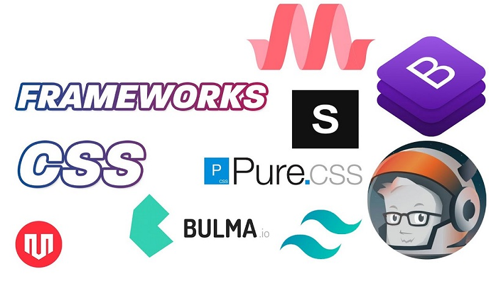

Frameworks CSS
Es una herramienta guía de estilos que se pueden usar como base para implementar la parte grafica de sitios Web, ayudando a ahorrar tiempos en la maquetación y creación de esta, se componen de diferentes implementos y son de fácil entendimiento.

algunos ejemplos de Frameworks CSS son:
Bootstrap: Es uno de los mas usados y mas antiguos en CSS, es una excelente opción para las personas que quieren aprender a usar Frameworks
Pure.css: esta pensado para las personas que programan sitios web basados en aplicaciones moviles.